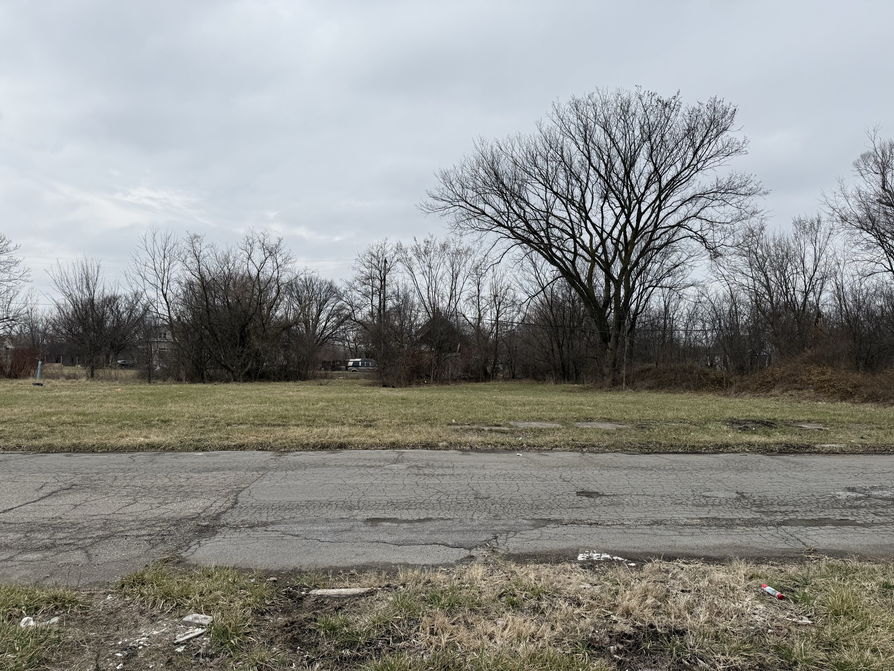

Dryad
Cities, land banks, and homeowners pay billions a year to keep weeds from taking over their land. Dryad autonomously turns these lands into green spaces that maintain themselves.
One project, several problems:
Maintenance that never ends
Detroit spends about $6.72 million a year mowing more than 100,000 vacant parcels; American homeowners spend roughly $40 billion on lawn care across 40 million acres of turf. Mowing keeps land from getting worse without ever making it better.
Blight that spreads to the whole block
A neglected lot lowers neighboring property values and draws dumping and disinvestment. The cost lands on every neighbor, not just the owner.
Nobody knows how to heal it
Turning a lot into living habitat takes ecological knowledge most owners don't have, and an ecologist is too expensive to hire for one small parcel.
Lawns and vacant lots are dead zones
Turf supports almost no native insects, and suburban songbirds are down roughly 30 percent since 1970. Every mowed acre is habitat that could exist and doesn't.
Cities are overheating
Pavement and bare ground trap heat. Chadsey-Condon runs about 5 degrees hotter than the Detroit metro average; meadow and canopy cool a neighborhood, while mowed dirt bakes it.
The first nine lots managed by Dryad are in Chadsey-Condon, Detroit, monitored daily, with a small treasury earmarked for the work. The first contractor jobs are the next step.
The Problem
A blighted vacant lot pulls adjacent home values down by 4 to 20 percent. The University of Pennsylvania ran a randomized controlled trial on greened vacant lots in Philadelphia and found that the same parcels, once cleaned and planted, lifted surrounding home values by 13 percent over six years and cut nearby crime by 9 percent. The cost per lot was a few hundred dollars a year. Detroit has more than 100,000 vacant lots, almost none of them small enough for a city program to touch. Detroit isn't unique: Cleveland, Baltimore, St. Louis, and a dozen other American cities sit on similar inventories that no one is going to mow forever. Dryad is the autonomous version of the Penn intervention, sized for the parcels everyone else skips.
Three things have come together to make this possible now: AI models capable of planning ecological restoration per parcel, GPS-tagged photo verification cheap enough to police a distributed contractor network, and public payment rails that let a small treasury operate without a back office.
The economics
How a recurring cost becomes a one-time investment.
The mowing line item never goes away on its own. A lawn keeps growing. Native meadows are different: once established, they largely take care of themselves, and ongoing work shrinks to light cosmetic maintenance along sidewalks and edges. Restored parcels are also easier for Detroit homeowners to acquire and keep up through existing side-lot programs, which moves them off the city's books entirely.
Maintaining Dryad's first nine lots through the establishment period costs about $945 a year. The current treasury is funded by grants and direct contributions and invested to cover ongoing work as it grows. Payments release only when a job is verified. As the model proves out, cities, land banks, and the landowners themselves become the natural long-term funders.
Common questions
Won't this just look like an overgrown lot?
The first year of a native meadow looks scrappy. That's part of why people leave vacant lots alone in the first place. Dryad keeps clear edges along sidewalks and curbs, marks and identifies what's growing, and posts signage on the parcel that explains the work in progress. By year three the meadow reads as intentional. By year five it reads as prairie.
Why does this need to be an AI agent?
Coordinating restoration across thousands of small parcels is more expensive than the restoration itself. Each lot has different soil, sun, drainage, and invasive pressure. The agent applies the same ecological decision framework to every parcel and dispatches local contractors to do the physical work. The coordination overhead is what kills these projects at small-parcel scale; removing it is what makes the per-lot cost feasible.
What happens if the meadow fails?
Native restoration is biological and uncertain. Plants die, droughts happen, invasives return. The work is reversible at any point: a parcel that isn't establishing can be mowed back to lawn. The agent monitors the establishment through field observations and contractor reports and adjusts the plan when something isn't working, including re-seeding or changing species selection. The Penn RCT covered parcels with similar variability and still produced the lifted home values and the crime drop at scale.
Whose land are you actually working on?
The landowner uses Dryad. The agent doesn't acquire parcels; it works on the owner's behalf. The nine parcels at 25th Street are held by an LLC that uses the agent for restoration. The same model works for any owner of vacant urban land: a city, a land bank, a homeowner with an adjacent side lot, or a private investor pooling small parcels.
What if a contractor submits bad work or lies?
Photos go through three automatic checks before any payment moves. The EXIF GPS has to place the camera within about 100 meters of the parcel. The timestamp has to be recent. A vision model scores the photo against a checklist specific to the work type: invasive removal expects cut stumps and cleared brush, planting expects new growth at the right density, and obviously blurry or stock images get flagged. Only photos passing all three trigger a public, tamper-proof record of the verification, and only verified work releases payment. Each contractor's pass-rate is logged in the public submission record; that record will eventually filter dispatch automatically. Today that filtering is manual.
What if nobody takes pictures of the plants?
The agent operates from a hard-coded ecological calendar that tells it what to expect each month: knotweed breaks dormancy in early spring, buckthorn is easiest to identify in fall, prairie burns happen in specific windows, planting windows open and close. Decisions run off that calendar whether or not fresh observations come in. iNaturalist contributions, neighbor reports, and contractor proof-of-work photos enrich the picture but aren't what the agent depends on to act.